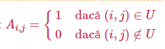
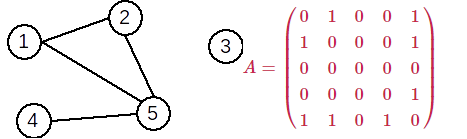

| Grafurile au numeroase aplicații în diverse domenii: proiectarea circuitelor electrice, determinarea celui mai scurt drum dintre două localități, rețelele sociale (ex. Facebook), etc. Primele rezultate legate de teoria grafurilor au fost obținute de matematicianul Leonard Euler, cel care a studiat Problema podurilor din Königsberg , din imaginea de mai sus. A demonstrat că problema nu are soluție, iar în onoarea lui o categorie specială de grafuri au fost numite grafuri euleriene. | |
| Terminologie Definiție: Se numește graf neorientat o pereche ordonată de mulțimi G=(X,U), unde: ->X este o mulțime finită și nevidă de elemente numite vârfuri sau noduri; ->U este o mulțime finită de submulțimi cu două elemente din X, numite muchii.Vom nota în continuare vârfurile cu valori între 1 și n – unde n este număru de vârfuri din graf, iar muchiile cu (x,y) sau [x,y], unde x și y sunt vârfuri și se numesc extremitățile muchiei. Un vecin al unui vârf x este orice vârf y cu proprietatea că există muchia (x,y). Două vârfuri între care există muchie se numesc adiacente. Două muchii sunt incidente dacă au o o extremitate comună. Un vârf este incident cu o muchie dacă vârful este extremitate a acelei muchii. Mulțimea muchiilor are proprietatea de simetrie: dacă (x,y) este muchie, atunci și (y,x) este muchie. ! Conform definiției:
|
 Exemplu: Fie G=(X,U), unde: X={1,2,3,4,5,6,7,8,9,10,11} U={(1,4),(1,5),(2,3),(2,8),(3,11),(4,5),(4,9),(7,10),(8,11)} |
| Gradul unui vârf Definiție Într-un graf neorientat se numește grad al unui vârf numărul de vârful adiacente cu acesta (sau numărul de muchii incidente cu acesta). Gradul unui vărf x se notează d(x) (degree). Observații: |
Teoremă: Într-un graf neorientat, suma gradelor tuturor vârfurilor este dublul numărului de muchii. ! Consecințe:
|
| Reprezentarea grafurilor neorientate Pentru un graf neorientat G=(X,U) cu n vârfuri, matricea de adiacență este o matrice cu n linii și n coloane și elemente din {0,1}, cu:  Observații:
| Exemplu: Pentru graful neorientat de mai jos avem următoarea matrice de adiacență:  |
| Lista de muchii Lista de muchii a unui graf neorientat reprezintă o mulțime ce conține toate muchiile din graf. Pentru reprezentarea în memorie putem folosi:
|
Pentru graful alăturat, lista de muchii este: U={(1,2),(1,5),(2,5),(4,5)} |
| Lista de adiacențe(lista de vecini) Pentru un graf neorientat cu G=(X,U) se va memora numărul de vârfuri n și apoi, pentru fiecare vârf x, lista vârfurilor adiacente cu x, adică a vârfurilor y cu proprietatea că există muchia (x,y). La reprezentarea în memorie trebui avut în vedere că dimensiunile listelor de vecini sunt variabile. Pentru graful alăturat, listele de adiacență sunt: 1: 2 5 2: 1 5 3: vidă 4: 5 5: 1 2 4 |
| Graf nul. Graf complet. Graf regulat. Graf bipartit
Definiţie: Un graf G=(X, U) se numește graf bipartit dacă există două mulţimi nevide A și B astfel încât X=A ∪ B, A ∩ B = ∅ şi orice muchie u a lui G are o extremitate în A iar cealaltă în B. Mulţimile A şi B formează o partiţie a lui X. Exemplu: Graful următor este bipartit. A={1,2,5,7} și B={3,4,6}. |
Definiție: Un graf bipartit G=(X,U) se numește bipartit complet dacă pentru oricare două vârfuri x∈A și y∈B, există în graf muchia (x,y); adică (x,y)∈U . Exemplu: Graful următor este bipartit complet. |
Definiție: Un graf neorientat se numește graf nul dacă mulțimea muchiilor este vidă. Într-un graf nul toate vârfurile sunt izolate. Definiție. Într-un graf complet cu n vârfuri sunt C2n=n∗(n−1⁄)2 muchii și fiecare vârf are gradul n-1. Propoziție: Sunt 2n∗(n−1)⁄2 grafuri neorientate distincte cu n vârfuri.  |